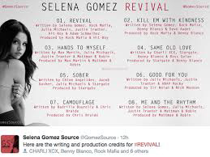
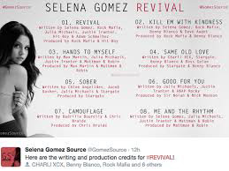

"Revival" Selena Gomez
When Selena released Revival, I was instantly excited to see what she will produce for her fans. When I first listened to it, I thought that maybe it is going to be like the rest of the music she has put out thus far. As I kept listening, it turned out that I deeply enjoyed the songs on this album and I understood the image she was going for. For the longest time, Selena was in the Disney Channel spotlight, unable to break free from the title of Justin Bieber's girlfriend and innocent actress. After releasing this album, she has made herself very clear that she does not fit into those titles any longer. She is a woman, who is self assured and that is proven if you listen to her songs. Sticking to the pop genre, the songs deliver a clear message of heartbreak but revival, as the title states. The racey album cover was a bold move but a necessary one, to really prove that she means business, which demands to be taken seriously. My overall rating of this album would be good. If I were to change anything about the album it would to break the repeatitive voice that she often times uses throughout the lyrical choices. I am a Selena fan through and through and this album was her best one yet.
 
